Inducción comercial · Lección 0Sales onboarding · Lesson 0
Tu trabajo: que cada cliente que pide ayuda tenga su visitaYour job: every customer who asks for help gets a visit
Contestas el 380-262-6688, llamas a los clientes y agendas las visitas en el CRM. Tu trabajo termina cuando la visita queda en el calendario: Juan David y Carlos visitan y cierran. Este es el camino completo del cliente; lo azul es tuyo.
You answer 380-262-6688, call customers and book visits in the CRM. Your job is done when the visit is on the calendar: Juan David and Carlos visit and close. This is the full customer path; blue is yours.
Cómo aprendes cada lecciónHow you learn each lesson
Tu inducción con JP quedó grabada: ver la grabación (13-oct, 34 min). Hora: hasta el sábado 31-oct Ohio va 1 hora adelante de Colombia; desde el domingo 1-nov es la misma hora. Todos los horarios de esta escuela son hora de Ohio.Your onboarding with JP was recorded: watch the recording (Oct 13, 34 min). Time: until Saturday Oct 31 Ohio is 1 hour ahead of Colombia; from Sunday Nov 1 it’s the same time. All times in this school are Ohio time.
Los videos son públicos, de YouTube (comprobados el 13-oct-2026). Si un video dice algo distinto a estas reglas (presionar, descuentos), ganan las reglas.The videos are public YouTube videos (checked Oct 13, 2026). If a video says something different from these rules (pushing, discounts), the rules win.
Lección 1 · MentalidadLesson 1 · Mindset
Ayudar, no presionar. El "no" no es contigo.Help, don’t push. A "no" isn’t about you.
1AprendeLearn
Lo que tienes que entenderWhat you need to understand
- La persona pidió ayuda: llenó el formulario o llamó. No es una llamada en frío.
- Tu trabajo es que alguien con frío, con un furnace viejo o con el aire dañado tenga una visita pronto. Eso es ayudar.
- Vas a escuchar "no" y vas a llamar a gente que no contesta. Es parte del oficio. Se mide que hagas el proceso completo, no cada respuesta.
- Somos honestos: más de 20 años en el oficio y nuevos en internet. Nunca se inventa nada.
- The person asked for help: they filled out the form or called. It’s not a cold call.
- Your job is to get someone who’s cold, with an old furnace or a broken AC, a visit soon. That is helping.
- You’ll hear "no" and call people who don’t answer. It’s part of the job. What’s measured is doing the full process, not each answer.
- We’re honest: 20+ years in the trade and new online. We never make anything up.
2MiraWatch
3PracticaPractice
- Ve los 2 videos y anota 3 ideas por video.
- Llamada simulada con Juan David o JP: el cliente dice "I’m not interested". Respondes sin presionar y dejas la puerta abierta.
- Watch both videos and write 3 ideas per video.
- Mock call with Juan David or JP: the customer says "I’m not interested". Answer without pushing and leave the door open.
4Apruebas cuandoYou pass when
Entregaste tus ideas y Juan David o JP aprobaron la llamada simuladaYou handed in your ideas and Juan David or JP approved the mock call
Lección 2 · Lead nuevo y seguimientoLesson 2 · New lead and follow-up
Lead nuevo o seguimiento: cómo los distingues y por cuál empiezasNew lead or follow-up: how to tell them apart and which comes first
1AprendeLearn
Lead nuevoNew lead
- Dejó sus datos hoy o llamó por primera vez.
- En el CRM está en la etapa New Lead y no tiene ninguna nota tuya.
- Qué haces: lees lo que pidió y llamas antes de 30 minutos.
- Left their info today or called for the first time.
- In the CRM it’s in the New Lead stage and has no note from you.
- What you do: read what they asked for and call within 30 minutes.
SeguimientoFollow-up
- Ya lo llamaste y no contestó (intentos 2, 3 o 4), pidió que lo llames otro día, tiene visita mañana u hoy y hay que confirmarla, o no compró en la visita (llamadas D+1 y D+3).
- Está en Contact Attempt, Manual Follow Up o Appointment Scheduled, y tiene una tarea con fecha.
- La última nota dice qué falta (PENDIENTE).
- You already called and got no answer (attempts 2, 3 or 4), they asked you to call another day, they have a visit tomorrow or today to confirm, or they didn’t buy at the visit (D+1 and D+3 calls).
- It’s in Contact Attempt, Manual Follow Up or Appointment Scheduled, and has a dated task.
- The last note says what’s missing (PENDING).
El orden del día (nunca se salta)The order of the day (never skip)
- Urgencias (sin calefacción o sin aire con riesgo).
- Leads nuevos de la noche: antes de las 9:30 a.m.
- Seguimientos: intentos 2 a 4 y llamadas de cotización D+1 y D+3 (las tareas vencidas de ayer también son de hoy).
- Confirmaciones por llamada de todas las visitas de mañana (y las de hoy, en la mañana).
- Un lead nuevo en vivo interrumpe todo, menos una llamada que ya estás haciendo.
- Emergencies (no heat or no AC with risk).
- Overnight new leads: before 9:30 a.m.
- Follow-ups: attempts 2 to 4 and quote calls D+1 and D+3 (yesterday’s overdue tasks are today’s too).
- Confirmation calls for all of tomorrow’s visits (and today’s, in the morning).
- A live new lead interrupts everything, except a call you’re already on.
08_etapas_pipeline.png3PracticaPractice
- Abre Opportunities y di de 5 clientes si son nuevos o seguimiento, y por cuál empiezas.
- Explica con tus palabras el orden del día.
- Open Opportunities and say for 5 customers whether they’re new or follow-up, and which you start with.
- Explain the order of the day in your own words.
4Apruebas cuandoYou pass when
El CRM muestra 3 días seguidos con 0 tareas vencidas y 0 leads nuevos sin llamarThe CRM shows 3 days in a row with 0 overdue tasks and 0 new leads uncalled
Lección 3 · VelocidadLesson 3 · Speed
El que llama primero, agendaWhoever calls first, books
1AprendeLearn
Quien pide una visita de HVAC casi siempre pide a varias empresas. Si llamas a los 5 minutos, todavía está pensando en su problema; si llamas en 3 horas, ya agendó con otro.
People who request an HVAC visit almost always contact several companies. Call within 5 minutes and they’re still thinking about their problem; call in 3 hours and they’ve booked someone else.
30 min30 min
Máximo para el primer intento, en horario: lunes a sábado, 9:00 a.m. – 8:00 p.m. de Ohio.Maximum for the first attempt, during hours: Mon–Sat, 9:00 a.m. – 8:00 p.m. Ohio time.
9:30 a.m.9:30 a.m.
Hora límite para los que entraron de noche (el lunes, también los del domingo).Deadline for overnight leads (on Monday, Sunday’s too).
NotificacionesNotifications
App HighLevel con notificaciones activadas. Un lead que no ves, se pierde.HighLevel app with notifications on. A lead you don’t see is lost.
2MiraWatch
3PracticaPractice
- Con el contacto de prueba: abres la app, lees lo que pidió y "llamas" (simulado). Cronometra: menos de 5 minutos.
- Revisa que las notificaciones te lleguen con el celular bloqueado.
- With the test contact: open the app, read what they asked for and "call" (mock). Time it: under 5 minutes.
- Check that notifications reach you with the phone locked.
4Apruebas cuandoYou pass when
El CRM muestra 3 días seguidos sin ningún lead sin llamar en 30 minutos (en horario)The CRM shows 3 days in a row with no lead uncalled within 30 minutes (in hours)
Lección 4 · La llamada y cuántas veces llamarLesson 4 · The call and how many times to call
Toda llamada termina con la visita agendada o con el motivo anotadoEvery call ends with a booked visit or the reason written down
1AprendeLearn
Cuántas veces llamar: 4 intentos, cada uno con doble marcado (8 marcadas), ni más ni menosHow many times: 4 attempts, each a double dial (8 dials), no more, no less
| CuándoWhen | QuéWhat | QuiénWho |
|---|---|---|
| Intento 1 · Día 0, < 30 minAttempt 1 · Day 0, < 30 min | Doble marcado. Si no contesta: buzón de voz + nota + tarea del intento 2Double dial. No answer: voicemail + note + task for attempt 2 | Setter |
| Intento 2 · Día 0, otra franjaAttempt 2 · Day 0, other time slot | Doble marcado, en la tarde si el 1 fue en la mañana (si entró en la tarde, a la mañana siguiente)Double dial, in the afternoon if 1 was in the morning (if they came in the afternoon, next morning) | Setter |
| Intento 3 · Día 2Attempt 3 · Day 2 | Doble marcado, de inmediato al abrir la tareaDouble dial, right when the task opens | Setter |
| Intento 4 · Día 5Attempt 4 · Day 5 | Doble marcado, en otra franja. Si no contesta: nota “No contactable” y oportunidad a LostDouble dial, at a different time. No answer: note “Not reachable” and opportunity to Lost | Setter |
| Día antes y mismo día de la visitaDay before and day of the visit | Llamada de confirmación a todas las visitas, con doble marcadoConfirmation call for every visit, double dial | Setter |
| D+1 y D+3 después de visitarD+1 and D+3 after the visit | Seguimiento de la cotización si no compró, con doble marcadoQuote follow-up if they didn’t buy, double dial | Setter |
Doble marcado: llamas, no contesta, cuelgas y vuelves a marcar de inmediato. Las 2 llamadas son 1 intento: una sola nota. El buzón de voz, en la segunda.Double dial: you call, no answer, hang up and dial again right away. Both calls are 1 attempt: one note. Voicemail on the second.
Franjas para llamar: 9:00 a.m. – 12:00 m. y 4:00 – 7:00 p.m. (hora de Ohio). Nunca antes de las 9:00 ni después de las 8:00 p.m.Calling windows: 9:00 a.m. – 12:00 p.m. and 4:00 – 7:00 p.m. (Ohio time). Never before 9:00 or after 8:00 p.m.
Las 4 reglas de la llamadaThe 4 call rules
- Antes de marcar, lee lo que pidió (proyecto, detalle, plazo, urgencia, ciudad). No se le vuelve a preguntar.
- Siempre 2 horarios concretos (mañana y tarde, en días distintos). Nunca "¿cuándo te sirve?".
- Solo precios públicos: furnace desde $2,350 · aire desde $4,000 · sistema completo $6,500 · mantenimiento desde $150. El precio exacto, en la visita.
- La visita es gratis: aire, furnace y también reparación (unos 20 min). El precio exacto lo da el técnico.
- Before dialing, read what they asked for (project, detail, timeline, urgency, city). Never ask again.
- Always 2 specific times (morning and afternoon, different days). Never "when works for you?".
- Public prices only: furnace from $2,350 · AC from $4,000 · full system $6,500 · maintenance from $150. Furnace replacement (they already have one): exact price by phone with 4 home details (stories, basement finished or not, chimney, furnace age); Juan David calls back with the price. New furnace install, AC and repairs: exact price at the free visit.
- The visit is free: AC, furnace and repairs too (about 20 min). The technician gives the exact price.
"Hi [Name], this is [your name] from Aire Express. You requested a new furnace for your home in [City]. Is this a good time?" "I have [Day] at [morning time] or [Day] at [afternoon time]. Which one works better?"
Objeciones (todas terminan en los 2 horarios)Objections (all end with the 2 times)
| "Just give me a price" | Furnace replacement: Furnaces start at $2,350. I can get you your exact price over the phone — how many stories is your home? (then basement, chimney, furnace age). New install / AC: exact price at a free 20-minute visit. [1] or [2]? |
| "I’ll think about it" | Sure. A free visit gives you a real price to decide with, no pressure. [1] or [2]? |
| "Do you offer financing?" / "How do I pay?" | We don’t work with financing companies. Payment options are explained at the visit, with your exact price. [1] or [2]? |
| "I don’t want to pay upfront" | No problem — you can sign the contract and pay when the job is done. [1] or [2]? |
| "Can you come today?" | Let me check if there’s room today. To hold your spot, the next openings are [1] or [2]. |
| "Do you cover my area?" | We cover up to 70 miles from Columbus. What’s your ZIP code? |
Las 11 objeciones completas: Inducción Comercial, módulo 2.2, y speech 01.All 11 objections: Sales Onboarding, module 2.2, and speech 01.
2MiraWatch
3PracticaPractice
- 3 role-plays con el speech 01: furnace, reparación y mantenimiento, con 3 objeciones distintas.
- En el contacto de prueba, crea las tareas de los intentos 2, 3 y 4 con su fecha (lección 9).
- 3 role-plays with speech 01: furnace, repair and maintenance, with 3 different objections.
- On the test contact, create the tasks for attempts 2, 3 and 4 with their dates (lesson 9).
4Apruebas cuandoYou pass when
El CRM muestra 3 días seguidos con exactamente 4 intentos (doble marcado) por lead sin respuestaThe CRM shows 3 days in a row with exactly 4 attempts (double dial) per unresponsive lead
Lección 5 · Escucha, urgencias y seguridadLesson 5 · Listening, emergencies and safety
Primero la persona, después el sistemaThe person first, then the system
1AprendeLearn
UrgenciaEmergency
Sin calefacción o sin aire con niños, adultos mayores, frío o calor extremo, o tuberías que se pueden congelar.No heat or no AC with children, elderly people, extreme cold or heat, or pipes that could freeze.
- En horario: llamas ya a Juan David y buscas hueco hoy; si no hay, el primer horario libre.
- Fuera de horario: se llama a las 9:00 a.m. del día siguiente.
- Tag
atencion-inmediata+ nota.
- During hours: call Juan David right away and find a slot today; if none, the first open slot.
- After hours: call at 9:00 a.m. the next day.
- Tag
atencion-inmediata+ note.
Gas o monóxido de carbono (CO)Gas or carbon monoxide (CO)
Olor a gas, alarma de CO o varias personas con mareo o dolor de cabeza: antes de agendar, la seguridad.Gas smell, CO alarm, or several people dizzy or with a headache: before booking, safety.
"Please leave the house now and call 911 or your gas company from outside."
Caso real (12-oct): una clienta habló de posible fuga de monóxido y nadie le dio esta instrucción. No se repite.Real case (Oct 12): a customer mentioned a possible CO leak and nobody gave her this instruction. Never again.
2MiraWatch
3PracticaPractice
- Simulada de urgencia: niños sin calefacción con frío. Llamas a Juan David y buscas hueco hoy.
- Simulada de olor a gas: dices la frase de seguridad ANTES de hablar de horarios.
- Emergency mock call: kids with no heat in the cold. Call Juan David and look for a slot today.
- Gas smell mock call: say the safety line BEFORE talking about times.
4Apruebas cuandoYou pass when
Cada urgencia real tiene aviso a Juan David, tag y nota (3 días seguidos sin faltas)Every real emergency has a call to Juan David, a tag and a note (3 days in a row)
Lección 6 · Reglas de mensajes de textoLesson 6 · Texting rules
No negociables: ley de EE.UU. (TCPA) y registro A2PNon-negotiable: U.S. law (TCPA) and A2P registration
1AprendeLearn
Romper una de estas reglas puede bloquear el número de la empresa o traer una demanda. Una sola vez es falta grave.Breaking one of these rules can get the company number blocked or bring a lawsuit. Even once is a serious violation.
Las 7 reglasThe 7 rules
- Solo se le escribe a quien marcó la casilla de mensajes. Al que no, se le llama.
- Solo entre 9:00 a.m. y 8:00 p.m. hora del cliente.
- Todo mensaje que inicias dice "Aire Express Ohio LLC" y termina con "Reply STOP to opt out."
- Quien responde STOP o pide que no le escriban, no recibe ningún mensaje más.
- No mandas campañas ni mensajes de venta a mano: los seguimientos los manda el sistema. Tú contestas lo que el cliente te escribe.
- A quien ya agendó, ya fue visitado o ya compró, no se le manda ningún mensaje de venta.
- Nada de precios fuera de los publicados, descuentos, financiamiento ni formas de pago (eso lo explica quien visita), salvo la frase "firmas el contrato y pagas al terminar" si el cliente no quiere adelantar dinero. "El mismo día" solo con "when we can".
- Only text people who checked the texting box. Everyone else gets a call.
- Only between 9:00 a.m. and 8:00 p.m. customer time.
- Every text you start says "Aire Express Ohio LLC" and ends with "Reply STOP to opt out."
- Anyone who replies STOP or asks not to be texted gets no more messages.
- You don’t send campaigns or sales texts by hand: the system sends follow-ups. You answer what the customer writes.
- Anyone who already booked, was visited or bought gets no sales messages.
- No prices other than the published ones, no discounts, no financing, no payment terms (the visitor explains those), except "sign the contract and pay when the job is done" if the customer doesn’t want to pay upfront. "Same day" only with "when we can".
3PracticaPractice
- Con 3 contactos de prueba dices si se les puede escribir o no, y por qué (casilla, hora, STOP).
- Escribe en el grupo: "Leí y acepto las reglas de mensajes".
- With 3 test contacts, say whether you can text them or not, and why (box, time, STOP).
- Write in the group: "I read and accept the texting rules".
4Apruebas cuandoYou pass when
El CRM muestra 3 días seguidos con 0 mensajes a quien no marcó la casilla o fuera de horarioThe CRM shows 3 days in a row with 0 texts to anyone without the box or outside hours
Lección 7 · El CRM: la ficha del cliente y cómo llamarLesson 7 · The CRM: the customer record and how to call
Todo lo del cliente está en su fichaEverything about the customer is in their record
1AprendeLearn
En el celular (app HighLevel)On the phone (HighLevel app)
- Abajo: Conversations → toca el chat del cliente.
- Arriba: "Tap to view Contact info" → se abre Contact details.
- Pestaña Details: nombre, correo, teléfono y los campos con lo que pidió.
- Los 5 botones azules: llamar · mensaje · correo · calendario · pago.
- Para llamar: el teléfono arriba a la derecha del chat, o el primer botón azul de la ficha. La llamada sale del número de Aire Express y queda registrada.
- Bottom: Conversations → tap the customer’s chat.
- Top: "Tap to view Contact info" → Contact details opens.
- Details tab: name, email, phone and the fields with what they asked for.
- The 5 blue buttons: call · text · email · calendar · payment.
- To call: the phone icon top right of the chat, or the first blue button on the record. The call goes out from the Aire Express number and is logged.
En el computadorOn the computer
- Contacts → el cliente. Izquierda: datos y etapa. Centro: la conversación. Derecha: los paneles de tareas, notas y citas (columna de íconos).
- All fields: todos los datos que llenó.
- Ícono del teléfono en la barra de la conversación para llamar.
- No toques "Enable Voice AI".
- Contacts → the customer. Left: details and stage. Middle: the conversation. Right: task, note and appointment panels (icon column).
- All fields: all the info they filled in.
- Phone icon on the conversation bar to call.
- Don’t touch "Enable Voice AI".
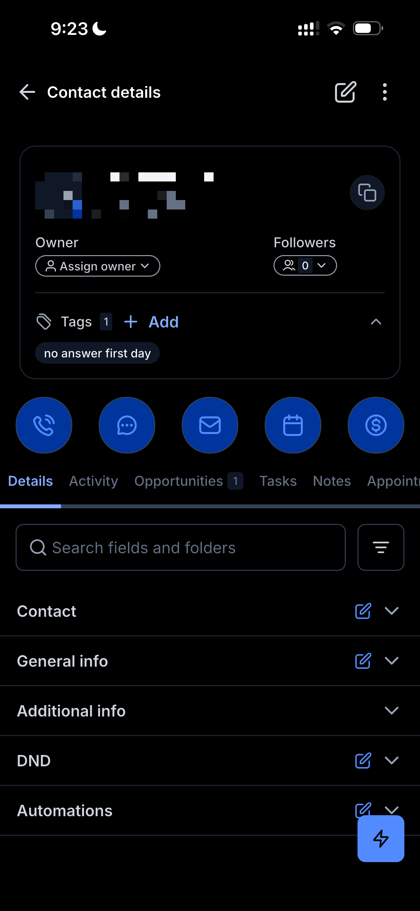
app_02_ficha.png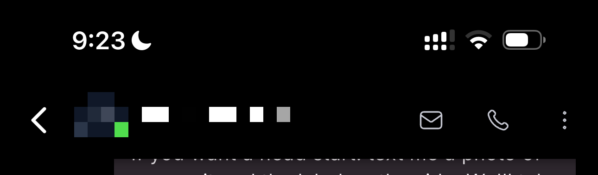
app_01_conversacion.png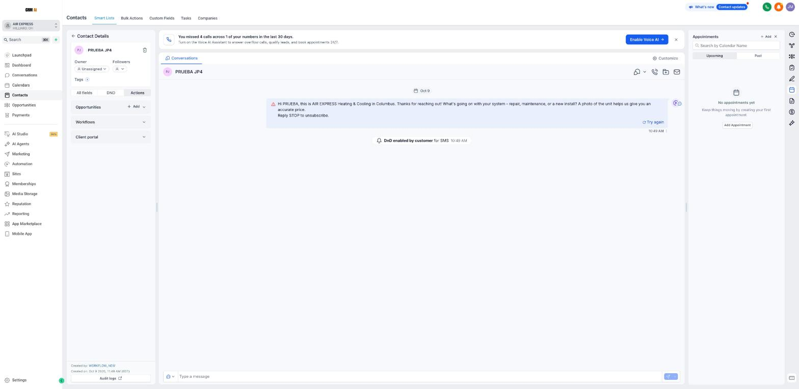
01_ficha_contacto.jpg03_iconos_llamar.png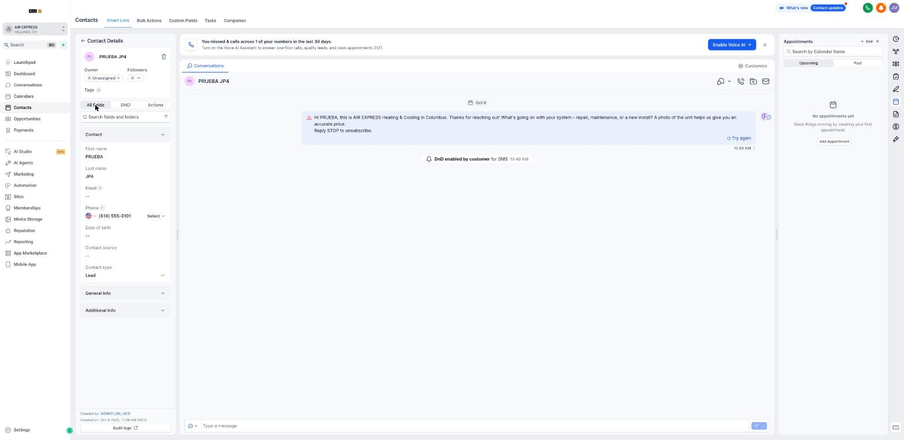
02_campos_contacto.jpg3PracticaPractice
- Abre el contacto de prueba "PRUEBA JP4" en el celular y en el computador.
- Di en voz alta qué pidió, de dónde es y si es urgente, sin preguntarle nada.
- Open the test contact "PRUEBA JP4" on the phone and on the computer.
- Say out loud what they asked for, where they’re from and if it’s urgent, without asking anything.
4Apruebas cuandoYou pass when
Encuentras cualquier dato del cliente en menos de 30 segundos (lo revisa Juan David o JP)You find any customer detail in under 30 seconds (checked by Juan David or JP)
Lección 8 · NotasLesson 8 · Notes
Después de CADA llamada, una nota. Si no hay nota, no pasó.After EVERY call, a note. No note, it didn’t happen.
1AprendeLearn
Cómo se deja la notaHow to leave the note
- Celular: Contact details → pestaña Notes → botón azul + abajo a la derecha → escribes → guardas.
- Computador: columna derecha, ícono del lápiz → + Add → Title vacío → Description con el formato → Save.
- En el momento, no al final del día.
- Phone: Contact details → Notes tab → blue + button bottom right → write → save.
- Computer: right column, pencil icon → + Add → leave Title empty → Description in the format → Save.
- Right away, not at the end of the day.
Contestó: Sí | Resultado: Agendó Detalle: furnace de 20 años, quiere cambiarlo antes del invierno. Visita jueves 10 a.m.
La primera línea siempre así: el sistema la lee. Resultados: Agendó · Confirmó · Reprogramó · No interesado · Objeción — precio · Objeción — tiempo · Ya contrató a otro · No disponible · Sin respuesta · No contactable · Fuera de zona · Urgencia atendida. Si no contestó: Contestó: No | Resultado: Sin respuesta.The first line always like this: the system reads it. Results: Agendó · Confirmó · Reprogramó · No interesado · Objeción — precio · Objeción — tiempo · Ya contrató a otro · No disponible · Sin respuesta · No contactable · Fuera de zona · Urgencia atendida. No answer: Contestó: No | Resultado: Sin respuesta.
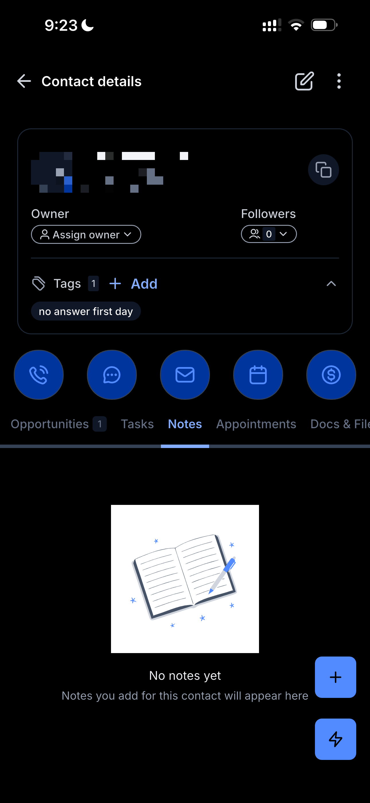
app_04_notas.png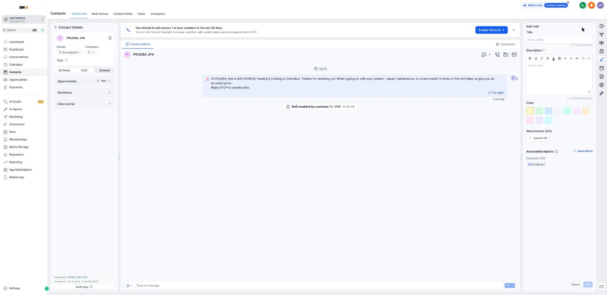
04_nueva_nota.jpg3PracticaPractice
- Deja 3 notas en el contacto de prueba: una "Agendó", una "Sin respuesta" y una "Objeción — precio".
- Leave 3 notes on the test contact: one "Agendó", one "Sin respuesta" and one "Objeción — precio".
4Apruebas cuandoYou pass when
El CRM muestra 3 días seguidos con 0 llamadas sin nota y todas con la primera línea en el formatoThe CRM shows 3 days in a row with 0 calls without a note, all in the first-line format
Lección 9 · TareasLesson 9 · Tasks
Lo que no está en una tarea, se olvidaIf it’s not a task, it gets forgotten
1AprendeLearn
Crear una tareaCreate a task
- Celular: Contact details → pestaña Tasks → botón azul +.
- Computador: columna derecha, ícono de tareas → + Add.
- Title: qué y cuál intento (ej. "Llamar — intento 2").
- Due date: fecha y hora reales (hora del Este).
- Assign to: tu usuario. → Create.
- Phone: Contact details → Tasks tab → blue + button.
- Computer: right column, tasks icon → + Add.
- Title: what and which attempt (e.g. "Llamar — intento 2").
- Due date: real date and time (Eastern).
- Assign to: your user. → Create.
Tu lista del díaYour daily list
- Computador: Contacts → Tasks → pestañas Due today y Overdue.
- Orden: urgentes → leads nuevos → intentos 2 y 3 → confirmaciones → el resto.
- Completar: tocas el círculo de la tarea. Sin nota no se completa. Nunca se borra.
- Si el cliente agenda antes, las tareas que ya no aplican se completan con la nota "Ya no aplica — agendó".
- Computer: Contacts → Tasks → Due today and Overdue tabs.
- Order: urgent → new leads → attempts 2 and 3 → confirmations → the rest.
- Complete: tap the task circle. No note, no completing. Never delete.
- If the customer books early, tasks that no longer apply are completed with the note "Ya no aplica — agendó".
Hoy (13-oct) la cuenta tiene 0 tareas: el sistema todavía no las crea solo. Hasta que esté listo, las tareas de los intentos las creas tú.Today (Oct 13) the account has 0 tasks: the system doesn’t create them yet. Until it does, you create the attempt tasks.
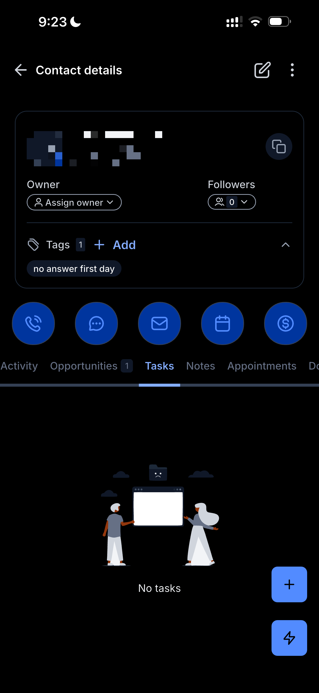
app_03_tareas.png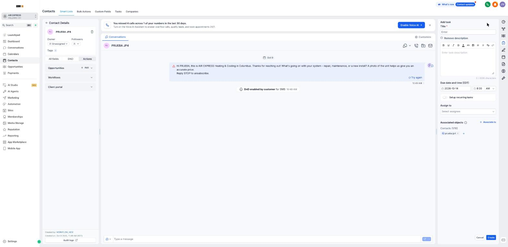
05_nueva_tarea.jpg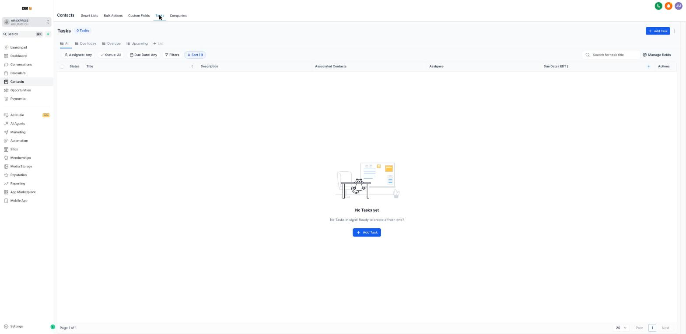
06_lista_tareas.jpg3PracticaPractice
- En el contacto de prueba crea "Llamar — intento 2" para mañana a las 4 p.m. y complétala con una nota.
- On the test contact create "Llamar — intento 2" for tomorrow at 4 p.m. and complete it with a note.
4Apruebas cuandoYou pass when
El CRM muestra 3 días seguidos con 0 tareas vencidas al cierre (8:00 p.m.)The CRM shows 3 days in a row with 0 overdue tasks at close (8:00 p.m.)
Lección 10 · CalendarioLesson 10 · Calendar
Si la visita no está en el calendario, no existeIf the visit isn’t on the calendar, it doesn’t exist
1AprendeLearn
Agendar la visita, paso a pasoBooking the visit, step by step
- Celular: Contact details → botón azul del calendario (4.º) o pestaña Appointments → +. Computador: columna derecha, ícono del calendario → Add Appointment → Meetings.
- Calendar: AIR EXPRESS - Service Visit.
- Appointment title: servicio y ciudad (ej. "Furnace estimate — Dublin").
- Zona horaria: America/New_York (EDT). Eliges la fecha y el horario acordado.
- Status: Confirmed si marcó la casilla de mensajes (le llegan la confirmación y los recordatorios). Unconfirmed si no la marcó (no le llega ningún SMS; tú lo confirmas por llamada el día antes).
- Book appointment. Después, la nota "Contestó: Sí | Resultado: Agendó" y la etapa Appointment Scheduled.
- Phone: Contact details → blue calendar button (4th) or Appointments tab → +. Computer: right column, calendar icon → Add Appointment → Meetings.
- Calendar: AIR EXPRESS - Service Visit.
- Appointment title: service and city (e.g. "Furnace estimate — Dublin").
- Time zone: America/New_York (EDT). Pick the date and the agreed slot.
- Status: Confirmed if they checked the texting box (they get the confirmation and reminders). Unconfirmed if not (no texts; you confirm by phone the day before).
- Book appointment. Then the note "Contestó: Sí | Resultado: Agendó" and the Appointment Scheduled stage.
El Status viene en Confirmed por defecto: revísalo siempre antes de guardar. Confirmed manda mensajes automáticos.Status defaults to Confirmed: always check it before saving. Confirmed sends automatic texts.
Caso real (13-oct): una clienta esperó desde las 10 a.m. y nadie llegó porque nunca se le pidió la dirección; la visita se movió por chat sin moverla en el calendario y el técnico iba tarde. Canceló. Reglas: sin dirección completa no hay visita · si la visita se mueve, se mueve en el calendario en ese momento · si el técnico va tarde, avisas al cliente ANTES de la hora.Real case (Oct 13): a customer waited from 10 a.m. and nobody came because we never asked for her address; the visit was moved by chat but not on the calendar, and the technician was late. She cancelled. Rules: no full address, no visit · if the visit moves, move it on the calendar right then · if the technician is late, tell the customer BEFORE the time.
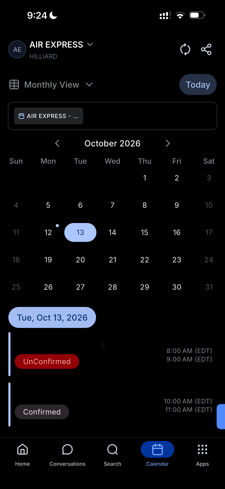
app_06_calendario.png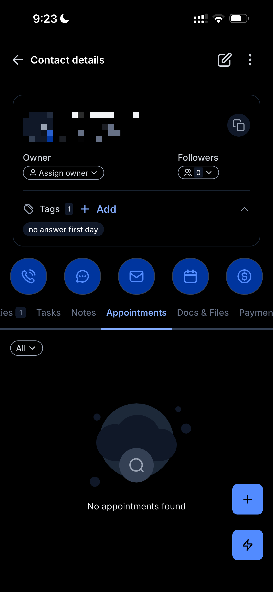
app_05_citas.png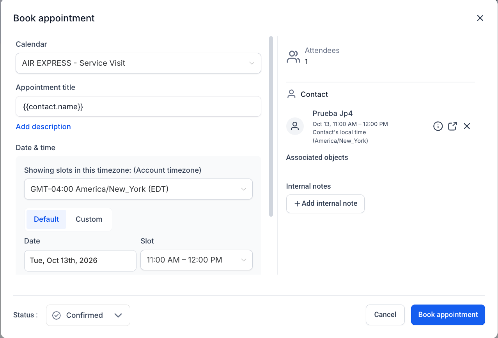
07_agendar_visita.png3PracticaPractice
- Con el contacto de prueba: abre "Book appointment", llena todo, pon el Status correcto y cancela sin guardar (no se crean visitas de prueba sin permiso de JP).
- Abre Calendar en el celular y di qué visitas hay hoy y su estado.
- With the test contact: open "Book appointment", fill everything, set the right Status and cancel without saving (no test visits without JP’s ok).
- Open Calendar on the phone and say which visits are today and their status.
4Apruebas cuandoYou pass when
El CRM muestra 3 días seguidos con toda visita cuadrada en el calendario y el Status correctoThe CRM shows 3 days in a row with every booked visit on the calendar with the right Status
Lección 11 · Etapas del pipelineLesson 11 · Pipeline stages
Cada cliente en su etapa, siempreEvery customer in their stage, always
1AprendeLearn
| EtapaStage | CuándoWhen | Quién la mueveWho moves it |
|---|---|---|
| New Lead | Entra sola cuando llega el leadSet automatically when the lead arrives | SistemaSystem |
| Contact Attempt | Llamaste y no contestóYou called, no answer | Setter |
| Manual Follow Up | Hablaste y pidió otro día (con tarea y fecha)You talked and they asked for another day (with a dated task) | Setter |
| Appointment Scheduled | Agendaste la visitaYou booked the visit | Setter o el agenteSetter or the agent |
| Estimating · Proposal Sent · Won | Después de la visitaAfter the visit | Quien visitóThe visitor |
| Lost | No contactable tras 4 intentos, no le interesa o fuera de zona (siempre con motivo en la nota)Not reachable after 4 attempts, not interested or out of area (always with the reason in a note) | Setter |
| Qualified Lead · Ghosted · Cold Lead | Las usa el agente de IA; tú noUsed by the AI agent; not by you | SistemaSystem |
Celular: Contact details → pestaña Opportunities → cambias la etapa. Computador: Opportunities → arrastras la tarjeta o la abres y cambias Stage.Phone: Contact details → Opportunities tab → change the stage. Computer: Opportunities → drag the card or open it and change Stage.
08_etapas_pipeline.png3PracticaPractice
- Abre Opportunities y ubica 3 clientes reales en su etapa correcta; di qué le toca a cada uno.
- Open Opportunities, place 3 real customers in their correct stage and say what each one needs next.
4Apruebas cuandoYou pass when
El CRM muestra 3 días seguidos con cada cliente en su etapa correctaThe CRM shows 3 days in a row with every customer in the right stage
Lección 12 · Tu díaLesson 12 · Your day
La disciplina es el método: el mismo orden todos los díasDiscipline is the method: the same order every day
1AprendeLearn
| Hora (Ohio)Time (Ohio) | Qué hacesWhat you do |
|---|---|
| 8:45 | Conversations: todo lo que entró desde las 8:00 p.m. de ayer (lunes: desde el sábado). Tasks: las de hoy y las vencidas.Conversations: everything since 8:00 p.m. yesterday (Monday: since Saturday). Tasks: today’s and overdue. |
| 9:00 | Urgencias → leads de la noche → lo que pida el reporte de las 9:00.Emergencies → overnight leads → whatever the 9:00 report asks. |
| 9:30–11:00 | Seguimientos: intentos 3 y 4 (días 2 y 5) y llamadas de cotización D+1 y D+3.Follow-ups: attempts 3 and 4 (days 2 and 5) and quote calls D+1 and D+3. |
| 11:00–1:00 | Confirmar por llamada todas las visitas de mañana (las de hoy, antes de su hora). Devolver llamadas perdidas.Call to confirm all of tomorrow’s visits (today’s before their time). Return missed calls. |
| 1:00 | Reporte de la 1:00: resuelves lo que pida.1:00 report: fix whatever it asks. |
| 1:15–4:00 | Leads nuevos en vivo y lo que escala el agente de IA.Live new leads and whatever the AI agent escalates. |
| 4:00–7:00 | Intento 2 del Día 0 (otra franja) de los leads de la mañana.Day-0 attempt 2 (other slot) for the morning leads. |
| 7:00 | Reporte de las 7:00: resuelves lo que pida.7:00 report: fix whatever it asks. |
| 7:15–8:00 | Cierre: ninguna tarea sin hacer ni sin nota; lo pendiente con fecha y hora; aviso en el grupo.Close: no task undone or without a note; pending items with date and time; update the group. |
2MiraWatch
3PracticaPractice
- Un día completo siguiendo la agenda hora por hora, con Juan David o JP revisando al cierre.
- One full day following the hour-by-hour schedule, with Juan David or JP checking at close.
4Apruebas cuandoYou pass when
El CRM muestra 3 días seguidos con 0 llamadas sin nota y 0 tareas vencidas al cierreThe CRM shows 3 days in a row with 0 calls without a note and 0 overdue tasks at close
Lección 13 · Así vendemos hoy (caso real)Lesson 13 · How we sell today (real case)
Contrato firmado → instalamos → nos paganSigned contract → we install → we get paid
1AprendeLearn
La primera venta de la campaña, paso a paso, tal como quedó en el CRM (13-oct-2026). Lo azul fue trabajo del Setter.The campaign’s first sale, step by step, as logged in the CRM (Oct 13, 2026). Blue was the Setter’s work.
El formato de venta vigenteThe current sales format
- Visita y cotización por escrito en la casa.
- El cliente acepta → confirmación por escrito.
- Contrato firmado antes de empezar (probar que se pueda firmar en el celular; si no, correo o papel).
- Forma de pago: anticipo del 60% y saldo al terminar, o pago al terminar (como con esta clienta). La define quien visita.
- Instalación → cobro → oportunidad a Won con el valor → reseña y referidos.
- Visit and written quote at the home.
- Customer accepts → written confirmation.
- Contract signed before starting (check it can be signed on a phone; if not, email or paper).
- Payment: 60% deposit and balance at the end, or pay on completion (as with this customer). The visitor decides.
- Installation → payment → opportunity to Won with the value → review and referrals.
Lo que aprendimos de este casoWhat we learned from this case
- Sin cotización escrita ni reseñas, la clienta no confió en pagar antes: la cotización se deja por escrito.
- El contrato llegó cuando ya se estaba instalando y no se pudo firmar en el celular: primero la firma, después la instalación.
- La respuesta honesta sobre las reseñas funcionó: nunca se inventa nada.
- La oportunidad seguía en Appointment Scheduled con $0: al firmar y al cobrar se mueve la etapa y se pone el valor.
- Se escribió firmando "Manny" desde el usuario de Juan David: cada persona con su propio usuario.
- With no written quote or reviews, she didn’t trust paying upfront: leave the quote in writing.
- The contract arrived during the install and couldn’t be signed on a phone: sign first, then install.
- The honest answer about reviews worked: we never make anything up.
- The opportunity was still in Appointment Scheduled with $0: on signing and on payment, move the stage and set the value.
- Messages signed "Manny" were sent from Juan David’s user: everyone uses their own user.
El Setter no explica formas de pago: su objetivo es que la visita quede agendada y confirmada. Única excepción: si el cliente no quiere adelantar dinero, “puedes firmar el contrato y pagar cuando terminemos”, y vuelve a los 2 horarios.The Setter doesn’t explain payment terms: the goal is a booked, confirmed visit. Only exception: if the customer doesn’t want to pay upfront, “you can sign the contract and pay when the job is done”, then back to the 2 times.
3PracticaPractice
- Cuenta con tus palabras el caso de punta a punta y señala qué le tocó al Setter y qué al visitador.
- Di qué 3 cosas se hacen distinto la próxima vez.
- Tell the case end to end in your own words and point out the Setter’s part and the visitor’s part.
- Say which 3 things are done differently next time.
4Apruebas cuandoYou pass when
Lo explicas sin ayuda y sin hablar de pagos en tu parteYou explain it on your own, without talking about payments in your part
Para quien capacitaFor the trainer
Cómo se usa esta escuela para capacitar a alguienHow to use this school to train someone
| DíaDay | Qué se haceWhat happens |
|---|---|
| 1 | Lecciones 0 a 3 + videos. Práctica: clasificar leads nuevos y de seguimiento.Lessons 0 to 3 + videos. Practice: sort new and follow-up leads. |
| 2 | Lecciones 4 a 6. Role-plays: 3 líneas × 3 objeciones, urgencia y olor a gas.Lessons 4 to 6. Role-plays: 3 lines × 3 objections, emergency and gas smell. |
| 3 | Lecciones 7 a 11 en el CRM con el contacto de prueba: nota, tarea, cita (se cancela), etapa.Lessons 7 to 11 in the CRM with the test contact: note, task, appointment (cancelled), stage. |
| 4 | Escucha llamadas reales de quien ya las hace. Lecciones 12 y 13.Listens to real calls by someone who already makes them. Lessons 12 and 13. |
| 5 | Llama a leads reales con quien capacita al lado; corrección al final de cada llamada.Calls real leads with the trainer beside them; feedback after each call. |
| 6+ | Trabaja solo; revisión diaria al cierre (7:15 p.m.) hasta aprobar en el CRM.Works alone; daily review at close (7:15 p.m.) until passing in the CRM. |
Guía completa: 06_Induccion_Comercial/GUIA_DEL_CAPACITADOR_AIRE_EXPRESS.Full guide: 06_Induccion_Comercial/GUIA_DEL_CAPACITADOR_AIRE_EXPRESS.
Exigencias del rolRole requirements
Lo que se mide, todos los díasWhat gets measured, every day
El CAIO lo mide solo con lo que dejas en el CRM, en los reportes de las 9:00 a.m., 1:00 p.m. y 7:00 p.m.The CAIO measures it only from what you leave in the CRM, in the 9:00 a.m., 1:00 p.m. and 7:00 p.m. reports.
| IndicadorMetric | ExigenciaRequirement |
|---|---|
| Primer intento a lead nuevo (en horario)First attempt on a new lead (in hours) | 100% < 30 min100% < 30 min |
| Leads de la noche llamadosOvernight leads called | 100% antes de 9:30 a.m.100% before 9:30 a.m. |
| Nota después de cada llamadaNote after every call | 100%100% |
| Tareas vencidas al cierreOverdue tasks at close | 00 |
| Visitas cuadradas fuera del calendarioVisits booked outside the calendar | 00 |
| Mensajes sin casilla o fuera de horarioTexts without the box or outside hours | 0 (falta grave)0 (serious violation) |
| Intentos por lead sin respuestaAttempts per unresponsive lead | Exactamente 4, con doble marcadoExactly 4, double dial |
| Confirmación de todas las visitas (día antes y mismo día)Confirmation of every visit (day before and same day) | 100%100% |
| Show-up (visitas hechas / agendadas)Show-up (visits done / booked) | Objetivo 75–85%, mínimo 60%Target 75–85%, minimum 60% |
| Tasa de agendaBooking rate | Sin meta las primeras 4 semanas: se mideNo target the first 4 weeks: measured |
Si un indicador se cae, el reporte lo pide ese mismo día; si sigue al día siguiente, se etiqueta a Juan David y a JP. Dos semanas seguidas fuera: Juan David decide con Growth Partner.If a metric slips, the report asks for it the same day; if it continues the next day, Juan David and JP are tagged. Two weeks in a row below: Juan David decides with Growth Partner.
Antes de empezarBefore you start
Tu lista para arrancarYour start checklist
Marca cada punto cuando esté hecho. Se guarda solo en este navegador; lo que cuenta es lo que el CAIO ve en el CRM.Check each item when done. Saved only in this browser; what counts is what the CAIO sees in the CRM.
Documento de referencia: 05_Comercial/scripts/07_ROL_SETTER_ATENCION_REMOTA. Growth Partner · octubre de 2026.Reference document: 05_Comercial/scripts/07_ROL_SETTER_ATENCION_REMOTA. Growth Partner · October 2026.